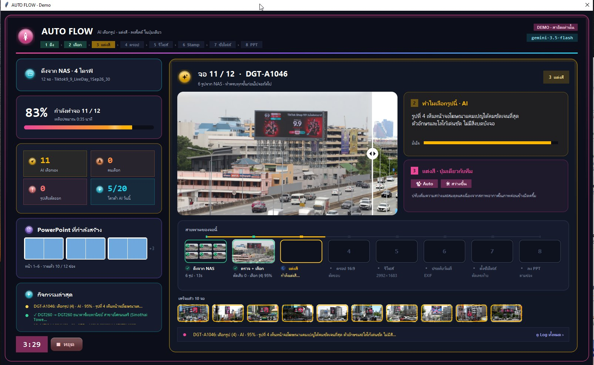
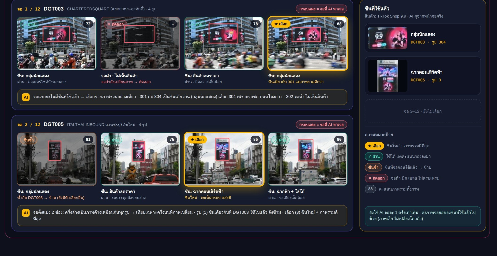
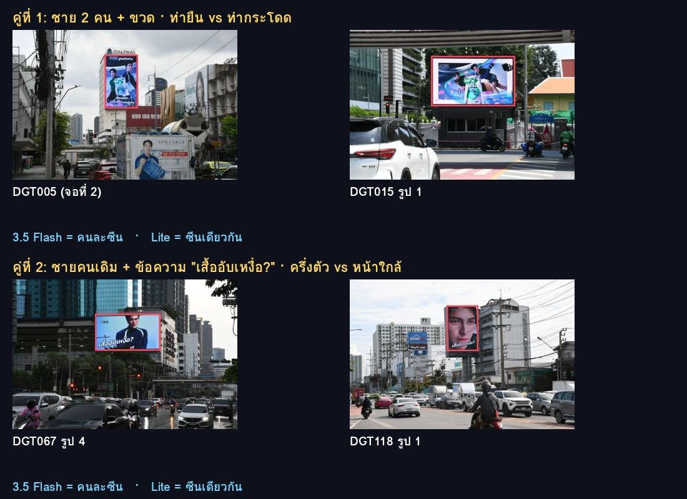

AI Use Case · ทีมรายงานจอโฆษณา
งานรายงานประจำเดือนต้องคัดรูปถ่ายจอโฆษณาราว 240 จอ เลือกรูปที่ดีที่สุดของแต่ละจอ ห้ามใช้ซีนโฆษณาซ้ำกับจอก่อนหน้า แต่งสี ประทับวันที่ แล้ววางลงสไลด์ AUTO FLOW ให้ Google Gemini ดูรูปจริงแล้วตัดสินแทนคน โดยมีโปรแกรมคุมกฎ และให้คนยืนยันเฉพาะจอที่ AI ไม่มั่นใจ
AUTO FLOW เป็นโปรแกรมบน Windows เพราะต้องอ่านรูปจาก NAS ภายในบริษัทโดยตรง หน้านี้จึงเป็นหน้าโปรเจกต์ที่รวมหลักฐานการทำงานจริงไว้ให้ตรวจสอบได้ ได้แก่ ภาพหน้าจอจากการรันจริง, log ที่โปรแกรมบันทึกเองทุกจอ, ผลทดลองเทียบรุ่น AI 12 จอ, Workflow ในรูปแบบ JSON และซอร์สโค้ดส่วน AI ทุกภาพและตารางมีป้ายบอกว่าเป็น ของจริง ภาพออกแบบ หรือ จำลอง
ตัวเลขเวลาคิดจากงานจริง 240 จอต่อเดือน รายละเอียดต่อหน่วยอยู่ในส่วน ผลลัพธ์
1 · PROBLEM
คนต้องเปิดรูปทีละจอ เลือกรูปที่ดีที่สุด และจำเองว่าจอก่อนหน้าใช้ซีนไหนไปแล้ว ใช้เวลานานและพลาดซีนซ้ำได้ง่าย
2 · CURRENT PROCESS
เราทำ InspectPilot มาช่วยดึงรูป ประทับวันที่ และสร้างสไลด์อัตโนมัติแล้ว แต่คนยังต้องนั่งเลือกรูปเองทุกจอ
3 · AI SOLUTION
Gemini ดูรูปทุกใบของจอ หากรอบจอ ตั้งชื่อซีน เทียบกับซีนที่ใช้แล้ว เลือกรูป และแนะนำการแต่งสี โปรแกรมบังคับกฎกันซีนซ้ำอีกชั้น
4 · AI TOOLS
ตอนรันงานใช้ Gemini 3.5 Flash-Lite และสลับไป 3.5 Flash ให้เองเมื่อ Google ยุ่ง ส่วน Claude ใช้ออกแบบหน้าจอ เขียนโค้ด และสร้างชุดทดลองเทียบรุ่น
5 · WORKFLOW
ดึง → เลือก (AI) → แต่งสี → ครอป → รีไซส์ → Stamp → ชื่อไฟล์ → PPT ดูทีละขั้นได้ใน Workflow
6 · EXPECTED IMPACT
ลดลงราว 97% จากการทำมือ ค่า AI ราว 33 บาทต่องาน 240 จอ และทุกจอมีเหตุผลบันทึกไว้ใน CSV
รอบเดโม 12 จอจาก NAS: AI เลือกเอง 11 จอ คนเลือก 0 จอ 10 จอแรกเสร็จใน 3:29 นาที (ราว 21 วินาทีต่อจอ รวมภาพเคลื่อนไหวที่แสดงบนจอ)


ทุกขั้นทำต่อเนื่องเองหลังกดปุ่มเดียว คนเข้ามาเฉพาะตอนตั้งค่าเริ่มงาน, ตอน AI มั่นใจต่ำกว่า 70% และตอนตรวจหน้าสรุป ดาวน์โหลด Workflow แบบ JSON: workflow.json
โปรแกรม ชื่อแคมเปญ + รายชื่อจอ (Master File) → รูปทุกจอ + รายชื่อจอที่ขาดรูป
AI (Gemini) รูป 1–8 ใบของจอ + ซีนที่ใช้แล้ว → best, confidence, reason, scene, dup, box
AI แนะนำปุ่ม + โปรแกรมปรับ รูปที่เลือก → รูปแต่งสีแล้ว (Auto/Balance/Brighter/Darker)
โปรแกรม รูป → รูป 16:9
โปรแกรม รูป → ขนาดตามแม่แบบรายงาน
โปรแกรม EXIF วันที่ถ่าย → รูปมีวันที่
โปรแกรม ชื่อไฟล์เดิม → ตัดเลข (1) ท้ายชื่อ
โปรแกรม รูปทุกจอ → ไฟล์ .pptx ตามช่องของแม่แบบ
ดูรูป หากรอบจอ ตั้งชื่อซีน เทียบกับซีนที่ใช้แล้ว ให้คะแนน เลือกรูป และแนะนำปุ่มแต่งสี
ถ้า AI เลือกซีนซ้ำทั้งที่ยังมีซีนใหม่ โปรแกรมเปลี่ยนรูปให้และเขียนเหตุผลใหม่ลง log · ตัดรูปจอดำหรือไม่เห็นสินค้าออก
ยืนยันจอที่ AI มั่นใจต่ำกว่า 70% และตรวจหน้าสรุปก่อนส่งงาน ถ้า AI ใช้ไม่ได้ (โควต้าหมด) โปรแกรมใช้เกณฑ์ในเครื่องแทน งานไม่หยุด
ส่งรูปทุกใบของ 1 จอ พร้อมภาพย่อของซีนที่จอก่อนหน้าใช้แล้ว แล้วบังคับให้ตอบเป็น JSON (responseMimeType: application/json, temperature 0.2) โปรแกรมจึงอ่านคำตอบได้ทุกครั้ง คำสั่งนี้คือค่าคงที่ AF_AI_PROMPT_SCENE ใน auto_flow.py (เวอร์ชัน scene2) ช่อง {n} {used} {dup_rule} {pick_rule} โปรแกรมเติมให้ตอนรัน
คุณคือผู้ตรวจรูปถ่ายป้ายโฆษณา (จอ LED/บิลบอร์ด) สำหรับรายงานประจำเดือน
งานนี้คือสินค้าเดียวกันหลายจอ แต่ละจอต้องใช้ 'ซีน' ไม่ซ้ำกัน · ตอนนี้เป็นรูปของจอเดียวกัน {n} รูป (รูปที่ 1–{n})
{used}ทำทุกรูป:
1) box = กรอบของส่วนจอภาพที่แสดงโฆษณา [ymin, xmin, ymax, xmax] สเกล 0–1000
2) scene = ชื่อซีนสั้นๆ ภาษาไทย 3–8 คำ บรรยาย 'สิ่งที่เห็นบนจอ' ในจังหวะนั้น ห้ามใช้ชื่อสินค้า/แบรนด์/แคมเปญ (ทุกจอเป็นสินค้าเดียวกันอยู่แล้ว) ให้บอก: คน (จำนวน/ลักษณะ) หรือวัตถุหลัก + สีพื้นหลัง + ข้อความพาดหัวใหญ่ถ้ามี เช่น "ชาย 2 คนคู่ขวด พื้นฟ้า", "ขวดเดี่ยว ข้อความ 9.9 พื้นแดง", "หญิงถือกล่อง พื้นชมพู" · ไม่ต้องบอกท่าทาง (ท่าทางไม่ใช่ตัวแบ่งซีน) · ซีนเดียวกัน = คน/วัตถุหลักชุดเดิม + พื้นหลัง/โทนสีเดิม + ข้อความพาดหัวเดิม แม้ท่าทาง มุมกล้อง ขนาด หรือจังหวะภาพเคลื่อนไหวต่างกัน · คนละซีน = เปลี่ยนคน/วัตถุหลัก หรือเปลี่ยนพื้นหลัง/ฉาก หรือเปลี่ยนข้อความพาดหัว · ถ้าจอแบ่งหลายช่อง ให้วิเคราะห์เองว่าส่วนไหนเปลี่ยนตามจังหวะ แล้วใช้ส่วนนั้นตัดสินซีน ไม่ใช้ส่วนที่ค้างเหมือนกันทุกรูป
3) no_product = true ถ้าจอดำ/กำลังเปลี่ยนภาพ/ไม่เห็นสินค้า
4) score 0–100 = คุณภาพทั้งภาพ: เห็นจอ/สินค้าชัด แสงพอดี ไม่เบลอ ไม่มีสิ่งกีดขวางบังจอ เห็นทั้งจอ องค์ประกอบดี
{dup_rule}แล้วเลือก best 1 รูป: {pick_rule}
ตอบเป็น JSON เท่านั้น รูปแบบ: {"best": <เลขรูป 1-{n}>, "confidence": <0-100>, "reason": "<เหตุผลภาษาไทย 1 ประโยคสั้นๆ>", "color": [<ปุ่มแต่งสี 0-3 ปุ่ม>], "color_reason": "<เหตุผลการแต่งสี สั้นๆ>", "images": [{"i": <เลขรูป>, "box": [ymin, xmin, ymax, xmax], "scene": "<ชื่อซีน>", "dup": <เลขซีนที่ใช้แล้ว หรือ 0>, "no_product": <true/false>, "score": <0-100>}], "scene_note": "<ถ้าจอแบ่งหลายช่อง บอกสั้นๆ ว่าเทียบส่วนไหน ไม่มีให้เว้นว่าง>"}
ปุ่มแต่งสีที่เลือกได้ มีแค่: "Auto" = ปรับสมดุลแสงสีอัตโนมัติ, "Balance" = แก้สีอมเหลือง/อมเขียว, "Brighter" = สว่างขึ้นเล็กน้อย, "Darker" = มืดลงเล็กน้อย · ถ้ารูปดีอยู่แล้วให้ color เป็น []
ถ้ารูปทั้งหมดใช้ไม่ได้ ให้ confidence ต่ำกว่า 40
จอ DGT118: Flash-Lite เสนอรูปที่ 2 ซึ่งเป็นซีน "ชายเดี่ยวครึ่งตัว ข้อความเสื้ออับเหงื่อ พื้นฟ้า" ที่ซ้ำกับจอ DGT067 โปรแกรมจึงเปลี่ยนเป็นรูปที่ 1 ตามกฎ "ห้ามใช้ซีนซ้ำถ้ายังมีซีนใหม่" และบันทึกไว้ในคอลัมน์ "โปรแกรมแก้ให้"
ใช้ชุดทดลอง ai_compare.py ส่งรูปจริง 12 จอให้ 3 รุ่นด้วยคำสั่งเดียวกับโปรแกรม แล้ววัดผลจากการตอบจริง ค่าใช้จ่ายคิดจาก token ที่ Google นับกลับมา ไฟล์ดิบ: CSV · JSON
| รุ่น | ตอบได้ | วินาที/จอ | token/จอ | ค่าใช้จ่าย 12 จอ (USD) | ประมาณ 240 จอ (บาท) | โปรแกรมต้องแก้ให้ |
|---|---|---|---|---|---|---|
| 3.5 Flash | 12/12 | 69.3 | 13,286 | 0.4439 | 301.88 | 0 |
| 3.6 Flash | 1/12 | 12.1 | 8,052 | 0.0118 | 96.21 | 0 |
| 3.5 Flash-Lite ★ | 12/12 | 4.4 | 10,334 | 0.0496 | 33.75 | 4 |
ผลที่ได้: Flash-Lite ตอบครบ 12/12 เร็วกว่า 3.5 Flash ราว 16 เท่า และถูกกว่าราว 9 เท่า ส่วน 3.6 Flash วันนั้น Google ยุ่ง (503) จนตอบได้จอเดียว จึงเลือก Flash-Lite เป็นรุ่นหลักและ 3.5 Flash เป็นรุ่นสำรอง ข้อเสียคือ Flash-Lite เลือกซีนซ้ำบ่อยกว่า (โปรแกรมต้องแก้ให้ 4 จอ) ซึ่งกฎในโปรแกรมรองรับไว้แล้ว
| จอ | AI เสนอ | ใช้จริง | มั่นใจ % | ซีน | ซ้ำกับจอ | โปรแกรม | วินาที | เหตุผลจาก AI |
|---|---|---|---|---|---|---|---|---|
| DGT003 | 2 | 2 | 90 | ขวดผลิตภัณฑ์ กลีบดอกไม้ พื้นหลังสีฟ้าเขียว | 2.6 | รูปที่ 2 แสดงภาพโฆษณาบนจอหลักได้ชัดเจนเต็มตาและองค์ประกอบครบถ้วนกว่า | ||
| DGT005 | 1 | 1 | 90 | ชาย 2 คนคู่ขวด พื้นหลังสีฟ้า | 4.5 | เลือกรูปที่ 1 เนื่องจากเป็นซีนที่ไม่ซ้ำกับจอก่อนหน้า และมีความคมชัดองค์ประกอบดีที่สุด | ||
| DGT015 | 3 | 3 | 95 | ขวดผลิตภัณฑ์ กลีบดอกไม้ พื้นหลังสีฟ้าเขียว | DGT003 | 4.1 | ภาพที่ 3 แสดงขวดผลิตภัณฑ์กับกลีบดอกไม้ พื้นหลังสีฟ้าเขียว ซึ่งไม่ซ้ำกับซีนที่เคยใช้แล้ว | |
| DGT067 | 4 | 4 | 92 | ชายเดี่ยวครึ่งตัว ข้อความเสื้ออับเหงื่อ พื้นฟ้า | 5.4 | ภาพคมชัด จอแสดงผลสมบูรณ์ และเป็นซีนใหม่ที่ไม่ซ้ำกับจอก่อนหน้า | ||
| DGT118 | 2 | 1 | 92 | ชายเดี่ยวครึ่งตัว ข้อความเสื้ออับเหงื่อ พื้นฟ้า | DGT067 | แก้ให้ | 3.4 | รูปที่ 2 แสดงภาพโฆษณาชัดเจน มุมมองสมบูรณ์ และเป็นซีนที่ไม่ซ้ำกับรายการก่อนหน้า |
| DGT128 | 4 | 4 | 92 | ชายเดี่ยวสูทสีเทา ข้อความซักผ้าหน้าฝน พื้นหลังครัว | 3.7 | เลือกรูปที่ 4 เนื่องจากเป็นซีนใหม่ที่ไม่ซ้ำกับซีนที่ใช้แล้ว และภาพมีความคมชัดองค์ประกอบดี | ||
| DGT132 | 2 | 3 | 90 | ชาย 2 คนคุยกัน พื้นหลังฟ้า | แก้ให้ | 9.9 | รูปที่ 2 เป็นจอแบ่งสองส่วน โดยส่วนบนเป็นซีนใหม่ที่ไม่ซ้ำกับซีนที่เคยใช้แล้ว และมีความคมชัดองค์ประกอบดีที่สุด | |
| DGT164 | 3 | 3 | 92 | ขวดผลิตภัณฑ์คู่ชาย 2 คน พื้นหลังฟ้าเขียว | 4.9 | เลือกรูปที่ 3 เนื่องจากเป็นซีนขวดผลิตภัณฑ์ที่ไม่ซ้ำกับซีนที่เคยใช้แล้ว และมีความคมชัดองค์ประกอบดีที่สุด | ||
| DGT239-A | 1 | 2 | 95 | ชาย 2 คนคู่ขวด พื้นหลังสีฟ้า | DGT005 | แก้ให้ | 3.7 | รูปที่ 1 แสดงซีนขวดผลิตภัณฑ์กลีบดอกไม้ พื้นหลังสีฟ้าเขียว ซึ่งตรงกับซีนที่ใช้แล้ว 1 และซ้ำน้อยที่สุด พร้อมคุณภาพภาพถ่ายที่ชัดเจน |
| DGT-A1046 | 2 | 2 | 90 | ขวดผลิตภัณฑ์ กลีบดอกไม้ พื้นหลังสีฟ้าเขียว | DGT003 | 2.4 | เลือกรูปที่ 2 เนื่องจากแสดงซีนที่ไม่ซ้ำกับซีนที่ใช้แล้ว และองค์ประกอบภาพชัดเจนดี | |
| DGT-A1054 | 2 | 3 | 92 | ชายเดี่ยวสูทสีเทา ข้อความซักผ้าหน้าฝน พื้นหลังครัว | DGT128 | แก้ให้ | 4.5 | รูปที่ 2 แสดงภาพป้ายโฆษณาชัดเจน มุมมองสมบูรณ์ และเป็นซีนที่ไม่ซ้ำกับซีนที่ใช้แล้ว |
| DGT-A1066 | 4 | 4 | 90 | ขวดผลิตภัณฑ์คู่ชาย 2 คน พื้นหลังฟ้าเขียว | DGT164 | 3.7 | รูปที่ 4 เห็นจอโฆษณาชัดเจน สินค้าครบถ้วน และเป็นซีนที่ไม่ซ้ำกับซีนที่ใช้แล้ว |

ทุกครั้งที่รัน AUTO FLOW จะเขียน autoflow_log.csv เองว่าแต่ละจอใครตัดสิน มั่นใจกี่ % และเพราะอะไร ด้านล่างเป็น log จริง 2 รอบแรก (งาน 12 จอ 53 รูป) ซึ่งยังมีปัญหา และเป็นที่มาของการแก้ในเวอร์ชันถัดไป
รอบที่ 1
ก.ย. 2026
AI ตอบ 3 จอ ส่วนอีก 9 จอโปรแกรมส่งให้คนเลือก เพราะเรียก API ผิดรูปแบบ (POST data should be bytes) และรอนานจนหมดเวลา · เวลารวม 687.9 วินาที
แก้แล้ว: แปลงข้อมูลก่อนส่ง, เพิ่มเวลารอเป็น 150 วินาที และลองใหม่อัตโนมัติ
รอบที่ 2
ก.ย. 2026
AI ตอบ 6 จอ (รวมผลที่จำไว้จากรอบก่อน) จากนั้นโควต้าฟรีของ 3.5 Flash หมด โปรแกรมจึงใช้เกณฑ์ในเครื่อง (ความคม + ความสว่าง) 5 จอ คนเลือก 1 จอ งานไม่หยุดกลางทาง · เวลารวม 581.3 วินาที
แก้แล้ว: เพิ่มรุ่นสำรองอัตโนมัติ และทดลองเทียบรุ่นจนย้ายไปใช้ Flash-Lite ซึ่งถูกและเร็วกว่า
ทดลองเทียบรุ่น
7 ต.ค. 2026
Flash-Lite ตอบครบ 12/12 จอ เฉลี่ย 4.4 วินาทีต่อจอ (ดูผล)
รอบเดโม 12 จอ
AI เลือกเอง 11 จอ คนเลือก 0 จอ ราว 21 วินาทีต่อจอ (ภาพหน้าจอ)
| จอ | รูป | มั่นใจ % | ตัดสินโดย | เหตุผล / หมายเหตุ |
|---|---|---|---|---|
| DGT003 | 2 | 95 | AI | รูปที่ 2 แสดงภาพผลิตภัณฑ์บนจอหลักตรงกลางได้อย่างชัดเจนและสมบูรณ์ |
| DGT005 | 5 | — | คน | AI ไม่ตอบ: POST data should be bytes, an iterable of bytes, or a file object. It |
| DGT015 | 4 | — | คน | AI ไม่ตอบ: POST data should be bytes, an iterable of bytes, or a file object. It |
| DGT067 | 8 | 95 | AI | รูปที่ 1 เห็นจอโฆษณาขนาดใหญ่ชัดเจน ไม่มีสิ่งบดบังหน้าจอ และเป็นซีนใหม่ที่ไม่ซ้ำกับจอก่อนหน้า |
| DGT118 | 2 | 95 | AI | รูปที่ 2 เห็นผลิตภัณฑ์บรีสชัดเจนและมีคุณภาพภาพดีที่สุด แม้ว่าจะเป็นซีนที่ซ้ำกับจอก่อนหน้า |
| DGT128 | 5 | — | คน | AI ไม่ตอบ: The read operation timed out |
| DGT132 | 4 | — | คน | AI ไม่ตอบ: POST data should be bytes, an iterable of bytes, or a file object. It |
| DGT164 | 7 | — | คน | AI ไม่ตอบ: The read operation timed out |
| DGT239-A | 2 | — | คน | AI ไม่ตอบ: POST data should be bytes, an iterable of bytes, or a file object. It |
| DGT-A1046 | 2 | — | คน | AI ไม่ตอบ: POST data should be bytes, an iterable of bytes, or a file object. It |
| DGT-A1054 | 8 | — | คน | AI ไม่ตอบ: POST data should be bytes, an iterable of bytes, or a file object. It |
| DGT-A1066 | 4 | — | คน | AI ไม่ตอบ: POST data should be bytes, an iterable of bytes, or a file object. It |
| จอ | รูป | มั่นใจ % | ตัดสินโดย | เหตุผล / หมายเหตุ |
|---|---|---|---|---|
| DGT003 | 2 | 95 | ใช้ผลเดิม | รูปที่ 2 แสดงภาพผลิตภัณฑ์บนจอหลักตรงกลางได้อย่างชัดเจนและสมบูรณ์ |
| DGT005 | 5 | 90 | AI | รูปที่ 1 แสดงหน้าจอโฆษณาที่มีตัวผลิตภัณฑ์ชัดเจน เป็นซีนใหม่ที่ไม่ซ้ำกับจอก่อนหน้า และเห็นจอภาพครบถ้วนไม่มีสิ่งบดบัง |
| DGT015 | 4 | 95 | AI | รูปที่ 1 เห็นหน้าจอโฆษณาชัดเจน ไม่มีสิ่งบดบัง และเป็นซีนใหม่ที่ยังไม่ถูกใช้งาน |
| DGT067 | 8 | 95 | ใช้ผลเดิม | รูปที่ 1 เห็นจอโฆษณาขนาดใหญ่ชัดเจน ไม่มีสิ่งบดบังหน้าจอ และเป็นซีนใหม่ที่ไม่ซ้ำกับจอก่อนหน้า |
| DGT118 | 2 | 95 | ใช้ผลเดิม | รูปที่ 2 เห็นผลิตภัณฑ์บรีสชัดเจนและมีคุณภาพภาพดีที่สุด แม้ว่าจะเป็นซีนที่ซ้ำกับจอก่อนหน้า |
| DGT128 | 5 | — | คน | AI ไม่ตอบ: Google ยุ่ง (503) This model is currently experiencing high demand. Sp |
| DGT132 | 4 | 90 | AI | รูปที่ 1 เห็นหน้าจอโฆษณาชัดเจน แสดงซีนใหม่ที่ยังไม่เคยใช้ และองค์ประกอบภาพดีไม่มีสิ่งบดบังหน้าจอ |
| DGT164 | 7 | 85 | เกณฑ์ในเครื่อง | คมชัดที่สุดและแสงพอดีที่สุด (เกณฑ์ในเครื่อง ไม่ใช้ AI) · โควต้า AI หมด |
| DGT239-A | 2 | 87 | เกณฑ์ในเครื่อง | คมชัดที่สุดและแสงพอดีที่สุด (เกณฑ์ในเครื่อง ไม่ใช้ AI) · โควต้า AI หมด (ไม่ได้เช็กซีน) |
| DGT-A1046 | 2 | 86 | เกณฑ์ในเครื่อง | คมชัดที่สุดและแสงพอดีที่สุด (เกณฑ์ในเครื่อง ไม่ใช้ AI) · โควต้า AI หมด (ไม่ได้เช็กซีน) |
| DGT-A1054 | 8 | 85 | เกณฑ์ในเครื่อง | คมชัดที่สุดและแสงพอดีที่สุด (เกณฑ์ในเครื่อง ไม่ใช้ AI) · โควต้า AI หมด (ไม่ได้เช็กซีน) |
| DGT-A1066 | 4 | 85 | เกณฑ์ในเครื่อง | คมชัดที่สุดและแสงพอดีที่สุด (เกณฑ์ในเครื่อง ไม่ใช้ AI) · โควต้า AI หมด (ไม่ได้เช็กซีน) |
ทุกตัวเลขเขียนเป็นเวลาต่อหน่วย × จำนวน เพื่อให้คิดตามได้ เวลาต่อหน่วยมาจากการจับเวลาของทีม ส่วนขั้นดึงรูปแบบเดิมประมาณด้วยวิธี KLM (Card, Moran & Newell 1980)
แบบเดิม · ทำมือ
~7–8 ชม.
InspectPilot · ยังไม่มี AI
~20–25 นาที
AUTO FLOW · AI เลือกให้
~10–15 นาที
เวลาคนลดลง
~97%
ค่า AI ต่องาน 240 จอ
~33 บาท
~0.14 บาทต่อจอ คิดจาก token ที่วัดได้จริง (33.2 บาท/USD)
คุณภาพ
ทุกจอ
เช็กซีนไม่ซ้ำ ใช้เกณฑ์เดียวกัน และมีเหตุผลบันทึกใน CSV
ไฟล์ทั้งหมดอยู่ใน repository นี้ ไม่มี API key และไม่มีที่อยู่ NAS ของบริษัท (โปรแกรมเก็บไว้ในไฟล์ตั้งค่าบนเครื่องเท่านั้น)